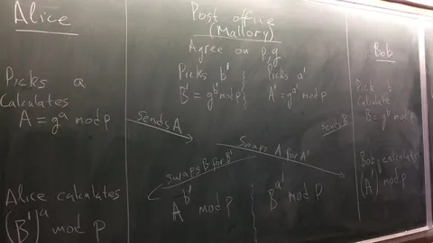

Anthropic posts claimed VP ≠ VNP proof by Claude, formalized in Lean
The paper, credited solely to Claude, claims a proof of Valiant's VP ≠ VNP conjecture (an algebraic analogue of P versus NP) over every field. Anthropic's README states that Lean checks the proofs, but no machine checks that the formal statement says what is claimed, and no human mathematician has checked the proof.

Checked against: casrai.org